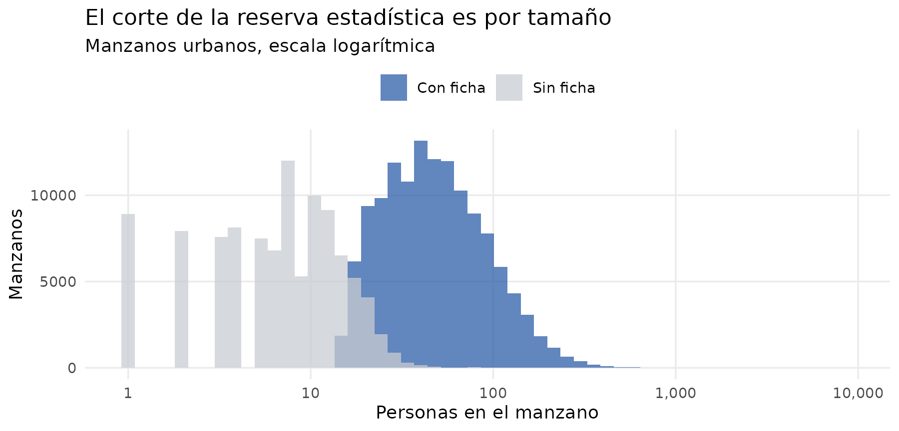
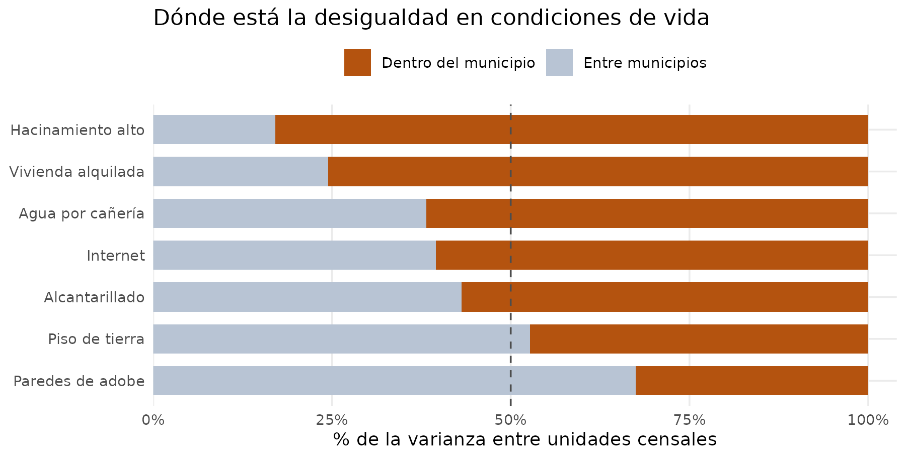
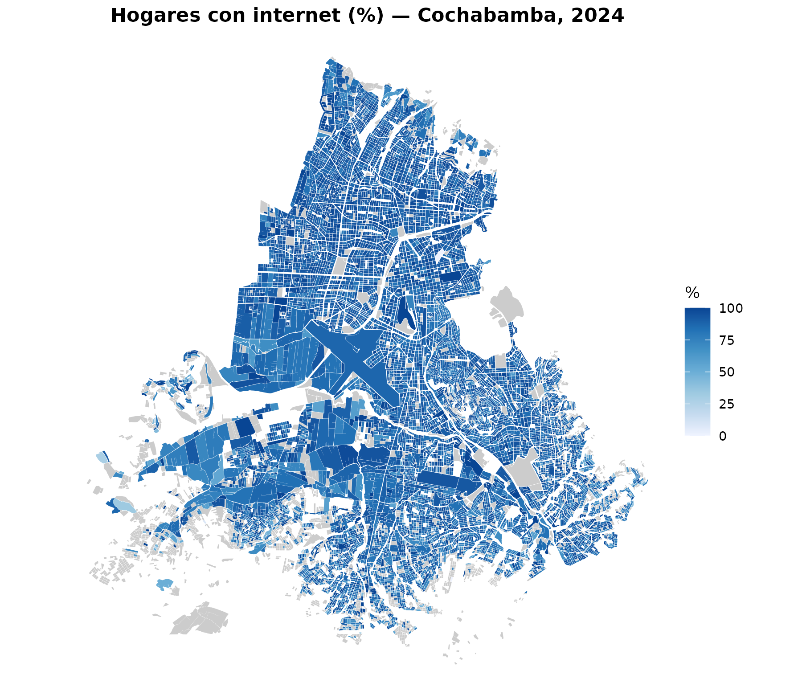
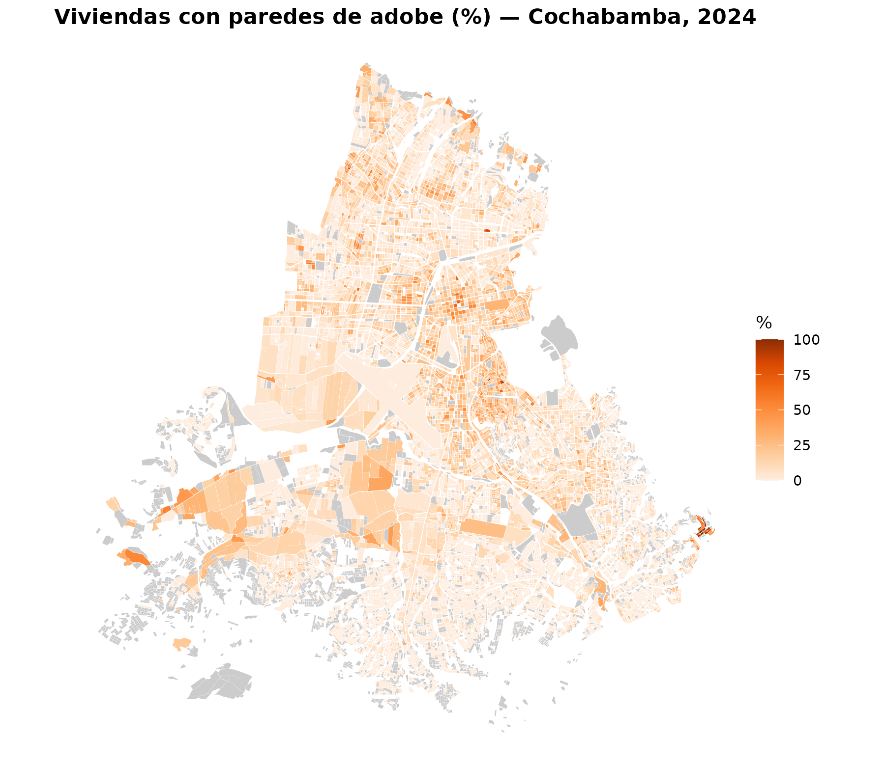
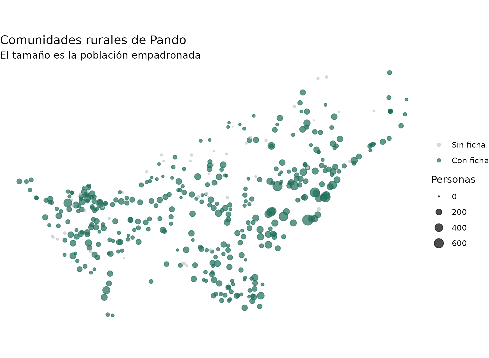
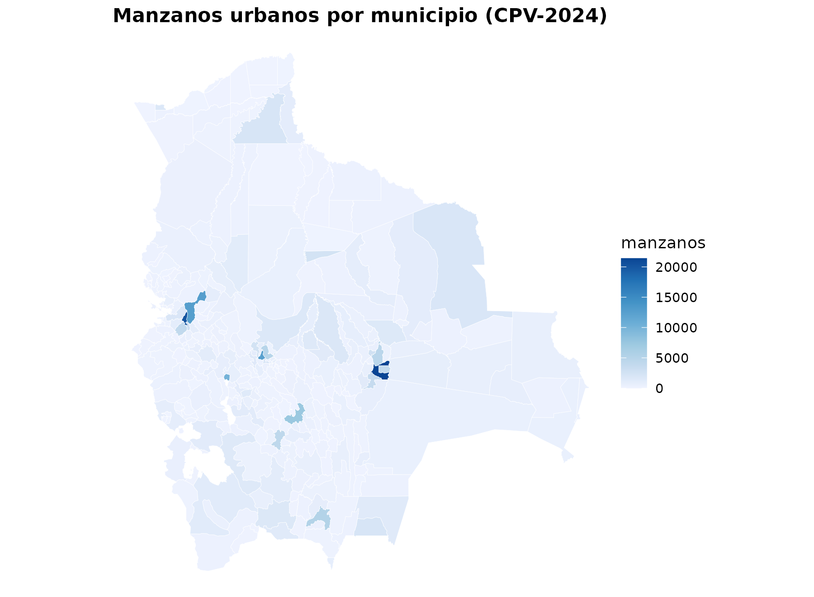

Manzanos y comunidades: el CPV-2024 al máximo detalle
Source:vignettes/manzanos-comunidades.Rmd
manzanos-comunidades.RmdLos microdatos del CPV-2024 llegan hasta el municipio: 343 unidades para todo el país. Pero el INE también publica, en su geoportal, una ficha resumen por cada unidad censal —manzano urbano o comunidad rural—. Son 268.604 unidades: casi mil veces más resolución espacial.
| Función | Qué devuelve |
|---|---|
get_unidades_2024() |
El universo: 268.604 unidades con población y viviendas |
get_fichas_2024() |
194 indicadores para las 150.744 unidades con ficha |
get_geo_manzanos() /
get_geo_comunidades()
|
Las geometrías |
mapa_man() |
Mapas de un municipio a nivel de manzano |
Dos tablas, no una
La distinción entre las dos primeras funciones responde a cómo publica el INE.
De todas las unidades se conoce cuánta gente y cuántas viviendas hay. Pero el INE no libera la ficha detallada de las unidades con poca población, por reserva estadística: en un manzano de seis viviendas, publicar la desagregación por edad, sexo y nivel educativo permitiría identificar personas.
unidades <- get_unidades_2024(as = "tibble", verbose = FALSE)
unidades |>
etiquetar_valores() |>
group_by(area) |>
summarise(
unidades = n(),
con_ficha = sum(ficha),
pct_unidades = round(100 * mean(ficha), 1),
pct_poblacion = round(100 * sum(personas[ficha]) / sum(personas), 1)
)
#> # A tibble: 2 × 5
#> area unidades con_ficha pct_unidades pct_poblacion
#> <fct> <int> <int> <dbl> <dbl>
#> 1 Urbana 247429 131801 53.3 89.5
#> 2 Rural 21175 18943 89.5 99.2Ese es el punto clave para interpretar todo lo demás: se pierde casi la mitad de los manzanos, pero solo el 10% de la población urbana. Las unidades sin ficha son las pequeñas.
unidades |>
filter(area == 1, personas > 0) |>
mutate(tiene = ifelse(ficha, "Con ficha", "Sin ficha")) |>
ggplot(aes(personas, fill = tiene)) +
geom_histogram(bins = 55, position = "identity", alpha = 0.75) +
scale_x_log10(labels = scales::comma) +
scale_fill_manual(values = c("Con ficha" = "#2E5EA8", "Sin ficha" = "#C8CCD1")) +
labs(title = "El corte de la reserva estadística es por tamaño",
subtitle = "Manzanos urbanos, escala logarítmica",
x = "Personas en el manzano", y = "Manzanos", fill = NULL) +
theme_minimal(base_size = 11) +
theme(legend.position = "top", panel.grid.minor = element_blank())
area usa el mismo código que en los microdatos (1 =
Urbana, 2 = Rural), así que etiquetar_valores() se comporta
igual en ambas fuentes.
Los 194 indicadores
get_fichas_2024() devuelve conteos, no
porcentajes. Cada bloque temático trae su propio total, que es el
denominador correcto:
codebook(tabla = "ficha") |>
filter(grepl("^serv_agua", variable)) |>
select(variable, etiqueta) |>
head(5)
#> variable etiqueta
#> 1 serv_agua_total Viviendas ocupadas por procedencia del agua
#> 2 serv_agua_caneria Agua por cañería de red
#> 3 serv_agua_pileta Agua de pileta pública
#> 4 serv_agua_carro Agua de carro repartidor
#> 5 serv_agua_pozobomba Agua de pozo con bombaCon eso, calcular un porcentaje es directo:
sucre <- get_fichas_2024(municipio = "Sucre", as = "tibble", verbose = FALSE)
sucre |>
mutate(pct_caneria = round(100 * serv_agua_caneria / serv_agua_total, 1)) |>
select(codigo, serv_agua_total, serv_agua_caneria, pct_caneria) |>
head(5)
#> # A tibble: 5 × 4
#> codigo serv_agua_total serv_agua_caneria pct_caneria
#> <chr> <dbl> <dbl> <dbl>
#> 1 00414143787-A 9 1 11.1
#> 2 00414466062-A 5 0 0
#> 3 00414475295-A 10 1 10
#> 4 00414483400-A 11 6 54.5
#> 5 00414514716-A 9 2 22.2Cuidado con los bloques de respuesta múltiple
Dos bloques no son categorías excluyentes:
salud_lugar_* (dónde acude una persona por problemas de
salud) y tic_* (equipamiento del hogar). Una misma persona
puede acudir a la farmacia y al centro público; un hogar puede tener
radio y televisor.
fichas <- get_fichas_2024(as = "tibble", verbose = FALSE)
tibble(
bloque = c("serv_agua_* (excluyente)", "tic_* (múltiple)"),
total = c(sum(fichas$serv_agua_total), sum(fichas$tic_total)),
suma_categorias = c(
sum(fichas$serv_agua_caneria + fichas$serv_agua_pileta + fichas$serv_agua_carro +
fichas$serv_agua_pozobomba + fichas$serv_agua_pozosinbomba +
fichas$serv_agua_vertienteno + fichas$serv_agua_vertientesi +
fichas$serv_agua_lluvia + fichas$serv_agua_otra),
sum(fichas$tic_radio + fichas$tic_tv + fichas$tic_celular + fichas$tic_internet)
)
) |>
mutate(razon = round(suma_categorias / total, 2))
#> # A tibble: 2 × 4
#> bloque total suma_categorias razon
#> <chr> <dbl> <dbl> <dbl>
#> 1 serv_agua_* (excluyente) 3322402 3322402 1
#> 2 tic_* (múltiple) 3322402 9785275 2.95En el primero la razón es exactamente 1; en el segundo es mucho mayor. Por eso el denominador correcto es siempre el total del bloque, nunca la suma de categorías.
Para qué sirve bajar del municipio al manzano
Si la desigualdad en condiciones de vida ocurriera sobre todo entre municipios, el nivel municipal bastaría. Se puede medir: para cada indicador, qué fracción de la varianza entre unidades explica el municipio al que pertenecen, y qué fracción queda dentro.
indicadores <- tribble(
~nombre, ~num, ~den,
"Agua por cañería", "serv_agua_caneria", "serv_agua_total",
"Alcantarillado", "serv_desague_alcantarillado", "serv_desague_total",
"Internet", "tic_internet", "tic_total",
"Piso de tierra", "mat_piso_tierra", "viv_tipo_presentes",
"Paredes de adobe", "mat_pared_adobe", "viv_tipo_presentes",
"Hacinamiento alto", "hac_alto", "viv_tipo_presentes",
"Vivienda alquilada", "viv_tenencia_alquilada", "viv_tenencia_total"
)
base <- fichas |>
mutate(mun = paste(idep, iprov, imun)) |>
filter(viv_tipo_presentes >= 10) # evita porcentajes inestables
# R2 = SS_entre / SS_total, calculado directo para no armar una matriz de
# diseño de 150.000 x 343 con lm(y ~ mun).
r2_municipio <- function(num, den) {
d <- base |>
transmute(mun, y = 100 * .data[[num]] / .data[[den]]) |>
filter(is.finite(y))
gran_media <- mean(d$y)
ss_entre <- d |>
group_by(mun) |>
summarise(n = n(), m = mean(y), .groups = "drop") |>
summarise(ss = sum(n * (m - gran_media)^2)) |>
pull(ss)
ss_entre / sum((d$y - gran_media)^2)
}
varianza <- indicadores |>
rowwise() |>
mutate(entre = round(100 * r2_municipio(num, den), 1)) |>
ungroup() |>
mutate(dentro = round(100 - entre, 1)) |>
arrange(dentro)
varianza |> select(nombre, entre, dentro)
#> # A tibble: 7 × 3
#> nombre entre dentro
#> <chr> <dbl> <dbl>
#> 1 Paredes de adobe 67.5 32.5
#> 2 Piso de tierra 52.7 47.3
#> 3 Alcantarillado 43.1 56.9
#> 4 Internet 39.5 60.5
#> 5 Agua por cañería 38.2 61.8
#> 6 Vivienda alquilada 24.5 75.5
#> 7 Hacinamiento alto 17.1 82.9
varianza |>
select(nombre, entre, dentro) |>
pivot_longer(-nombre) |>
mutate(name = factor(name, c("dentro", "entre"),
c("Dentro del municipio", "Entre municipios")),
nombre = factor(nombre, varianza$nombre)) |>
ggplot(aes(value, nombre, fill = name)) +
geom_col(width = 0.7) +
geom_vline(xintercept = 50, linetype = "dashed", color = "grey30") +
scale_fill_manual(values = c("Dentro del municipio" = "#B4530F",
"Entre municipios" = "#B8C4D4")) +
scale_x_continuous(labels = \(x) paste0(x, "%"),
expand = expansion(mult = c(0, 0.04))) +
labs(title = "Dónde está la desigualdad en condiciones de vida",
x = "% de la varianza entre unidades censales", y = NULL, fill = NULL) +
theme_minimal(base_size = 11) +
theme(legend.position = "top", panel.grid.minor = element_blank())
En la mayoría de los indicadores el municipio explica menos de la mitad de la varianza: un promedio municipal de “80% con agua por cañería” puede esconder manzanos al 100% y manzanos al 20%.
La excepción va en la dirección esperable y es informativa: los materiales de construcción son regionales —el adobe responde al clima y a la tradición constructiva de cada zona—, mientras que el hacinamiento es casi enteramente intramunicipal. Para estudiar dónde se construye con adobe, el municipio basta; para estudiar quién vive hacinado, no.
Mapas a nivel de manzano
mapa_man() pide siempre un municipio: dibujar 268.604
unidades del país entero no produce nada legible. Las geometrías se
descargan al caché la primera vez.
get_fichas_2024(municipio = "Cochabamba", as = "tibble", verbose = FALSE) |>
mutate(pct = 100 * tic_internet / tic_total) |>
mapa_man("pct", municipio = "Cochabamba", area = "urbano",
titulo = "Hogares con internet (%) — Cochabamba, 2024",
etiqueta_fill = "%")
Los manzanos grises son los que no tienen ficha: no es un vacío del paquete, es la reserva estadística del INE.
El mismo municipio con un indicador de materiales, que dibuja una ciudad distinta:
get_fichas_2024(municipio = "Cochabamba", as = "tibble", verbose = FALSE) |>
mutate(pct = 100 * mat_pared_adobe / viv_tipo_presentes) |>
mapa_man("pct", municipio = "Cochabamba", area = "urbano",
titulo = "Viviendas con paredes de adobe (%) — Cochabamba, 2024",
etiqueta_fill = "%", paleta = "Oranges")
Para trabajar con las geometrías directamente:
manzanos <- get_geo_manzanos(municipio = "Sucre", verbose = FALSE)
manzanos
#> Simple feature collection with 7399 features and 5 fields
#> Geometry type: MULTIPOLYGON
#> Dimension: XY
#> Bounding box: xmin: -65.54193 ymin: -19.13961 xmax: -65.10028 ymax: -18.70328
#> Geodetic CRS: WGS 84
#> # A tibble: 7,399 × 6
#> codigo nombre idep iprov imun geometria
#> * <chr> <chr> <chr> <chr> <chr> <MULTIPOLYGON [°]>
#> 1 04144245560-A AZARI BAJA 01 01 01 (((-65.24162 -19.09746, -65.24247…
#> 2 04142703883-A AZARI BAJA 01 01 01 (((-65.23925 -19.10076, -65.2392 …
#> 3 04139661122-A AZARI BAJA 01 01 01 (((-65.23175 -19.10594, -65.23118…
#> 4 04132568675-A AZARI BAJA 01 01 01 (((-65.23355 -19.11735, -65.23406…
#> 5 04141420362-A AZARI BAJA 01 01 01 (((-65.23171 -19.10406, -65.23187…
#> 6 04131919016-A AZARI BAJA 01 01 01 (((-65.23401 -19.11845, -65.23341…
#> 7 04143310533-A AZARI BAJA 01 01 01 (((-65.24107 -19.09722, -65.24032…
#> 8 04143788615-A AZARI BAJA 01 01 01 (((-65.24284 -19.09737, -65.24283…
#> 9 04138078691-A AZARI BAJA 01 01 01 (((-65.23221 -19.11033, -65.23214…
#> 10 04142930138-A AZARI BAJA 01 01 01 (((-65.23834 -19.09959, -65.23777…
#> # ℹ 7,389 more rowsEl área rural: puntos, no polígonos
El INE publica casi todas las comunidades rurales como un punto, no como un polígono. No hay superficie que colorear, así que para mapas rurales suele funcionar mejor graduar el tamaño.
library(sf)
#> Linking to GEOS 3.12.1, GDAL 3.8.4, PROJ 9.4.0; sf_use_s2() is TRUE
geo_pando <- get_geo_comunidades(departamento = "Pando", verbose = FALSE)
u_pando <- get_unidades_2024(departamento = "Pando", area = "rural",
as = "tibble", verbose = FALSE)
geo_pando |>
left_join(u_pando, by = "codigo") |>
ggplot() +
geom_sf(aes(size = personas, color = ficha), alpha = 0.7) +
scale_size_continuous(range = c(0.4, 5), labels = scales::comma) +
scale_color_manual(values = c("TRUE" = "#1F6F5C", "FALSE" = "#C8CCD1"),
labels = c("TRUE" = "Con ficha", "FALSE" = "Sin ficha")) +
labs(title = "Comunidades rurales de Pando",
subtitle = "El tamaño es la población empadronada",
size = "Personas", color = NULL) +
theme_void(base_size = 11)
El gradiente urbano-rural
Como area comparte dominio con los microdatos, la
comparación es directa.
comparar <- function(num, den, nombre) {
fichas |>
group_by(area) |>
summarise(pct = 100 * sum(.data[[num]]) / sum(.data[[den]]), .groups = "drop") |>
mutate(indicador = nombre)
}
bind_rows(
comparar("serv_desague_alcantarillado", "serv_desague_total", "Alcantarillado"),
comparar("serv_agua_caneria", "serv_agua_total", "Agua por cañería"),
comparar("tic_internet", "tic_total", "Internet"),
comparar("serv_combustible_lena", "serv_combustible_total", "Cocina con leña"),
comparar("mat_piso_tierra", "viv_tipo_presentes", "Piso de tierra"),
comparar("edu_superior_m", "edu_total_m", "Educación superior (mujeres)"),
comparar("hac_alto", "viv_tipo_presentes", "Hacinamiento alto")
) |>
mutate(area = ifelse(area == 1, "Urbana", "Rural")) |>
pivot_wider(names_from = area, values_from = pct) |>
mutate(brecha = Urbana - Rural, across(where(is.numeric), \(x) round(x, 1))) |>
arrange(desc(abs(brecha)))
#> # A tibble: 7 × 4
#> indicador Urbana Rural brecha
#> <chr> <dbl> <dbl> <dbl>
#> 1 Alcantarillado 67 3.9 63.1
#> 2 Cocina con leña 2.3 59.2 -56.9
#> 3 Piso de tierra 7.5 61.5 -54
#> 4 Agua por cañería 85.3 36.2 49.1
#> 5 Internet 84 46.1 37.8
#> 6 Educación superior (mujeres) 41.4 10.1 31.3
#> 7 Hacinamiento alto 12.5 20.9 -8.5El alcantarillado rural es el dato más duro de la tabla. Y el hacinamiento va en dirección contraria a lo que suele suponerse de un problema urbano: es mayor en el área rural.
Cruzar con los microdatos
Las unidades traen idep, iprov e
imun, así que agregan y se cruzan con cualquier otra tabla
del paquete:
por_municipio <- unidades |>
group_by(idep, iprov, imun) |>
summarise(manzanos = sum(area == 1), .groups = "drop")
mapa_mun(por_municipio, "manzanos",
titulo = "Manzanos urbanos por municipio (CPV-2024)")
#> Warning: 4 municipio(s) en los datos no tienen geometría disponible.
#> ℹ Aparecerán como áreas grises en el mapa.
#> ℹ Son los 4 municipios del CPV-2024 sin cobertura cartográfica en la fuente.
Y sirve de comprobación: la población agregada por unidades debe coincidir con los microdatos. Aquí se hace con Pando para no descargar los 282 MB de la tabla de personas completa, pero el resultado es el mismo en los 343 municipios del país: 11.365.333 personas, cuadrando uno a uno.
pob_micro <- get_personas_2024(departamento = "Pando", verbose = FALSE) |>
count(idep, iprov, imun, name = "microdatos") |>
collect()
get_unidades_2024(departamento = "Pando", as = "tibble", verbose = FALSE) |>
group_by(idep, iprov, imun) |>
summarise(agregado = sum(personas), .groups = "drop") |>
full_join(pob_micro, by = c("idep", "iprov", "imun")) |>
summarise(
municipios = n(),
cuadran_exacto = sum(agregado == microdatos),
poblacion = sum(agregado)
)
#> # A tibble: 1 × 3
#> municipios cuadran_exacto poblacion
#> <int> <int> <int>
#> 1 15 15 134194De dónde salen estos datos
Del geoportal del INE, que genera una ficha por unidad censal a
demanda. El paquete no consulta ese servicio: los datos se descargaron
una vez, se consolidaron y se publican como Parquet en un release de
GitHub. El proceso completo está en data-raw/fichas/ del
repositorio.
Cuatro notas sobre la fuente:
- Los conteos corresponden a residentes habituales y no incluyen a las personas que residen en el exterior, por lo que difieren ligeramente de otros totales del censo.
- La población agregada por municipio coincide exactamente con
get_personas_2024(), como se acaba de comprobar. Las viviendas dan un 0,23% menos queget_viviendas_2024(), con un déficit sistemático (323 municipios por debajo, ninguno por encima): el INE las cuenta distinto en el geoportal y en los microdatos. Para el total de viviendas de un territorio, usaget_viviendas_2024(). - El INE cambió su geoportal durante 2026 y la versión nueva
(
idg.ine.gob.bo) exige captcha para estos endpoints. Los datos provienen del servicio que atiende ageoportal.ine.gob.bo. - Los 34 campos de materiales, hacinamiento y tipo de hogar
(
mat_*,hac_*,hogar_*) venían de una segunda ficha que ese servicio ya no entrega, y proceden de una captura de junio de 2026. Se validaron contra la ficha PDF oficial del INE y comprobando que sus seis bloques suman exactamenteviv_tipo_presentesen las 150.744 fichas.